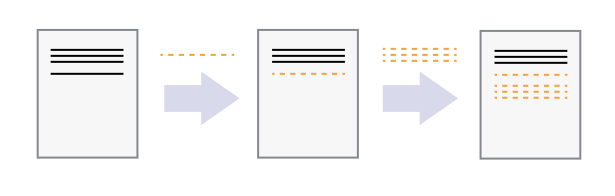
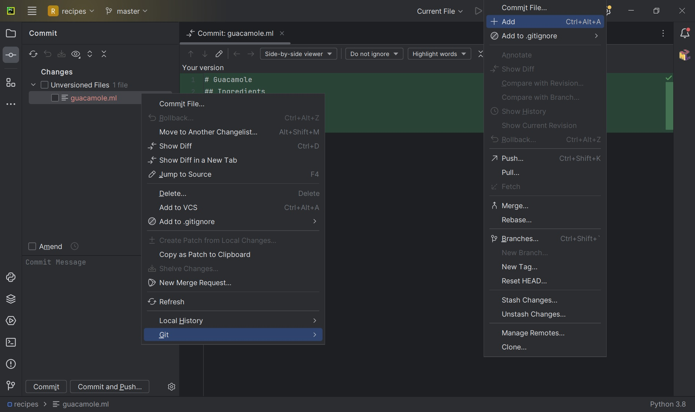
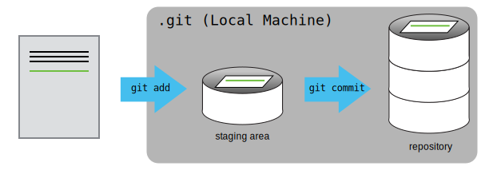
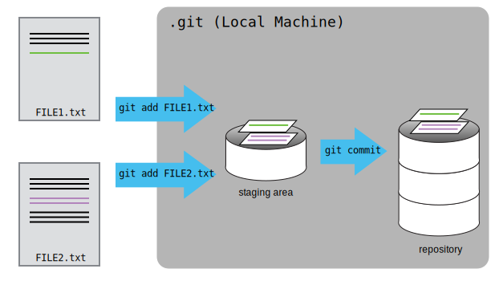
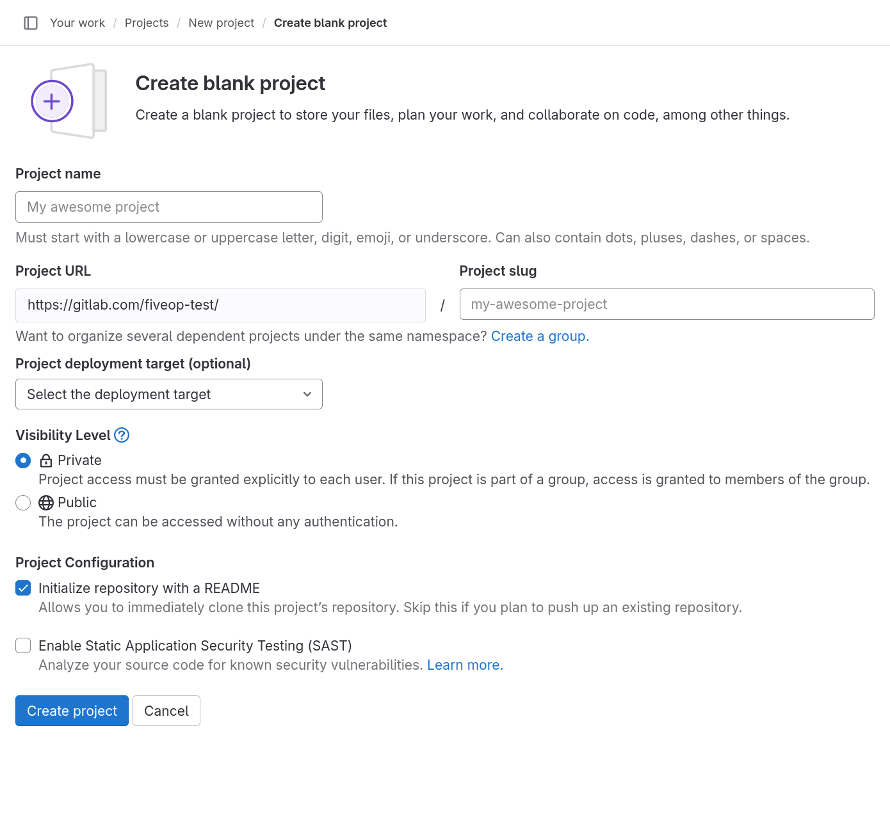
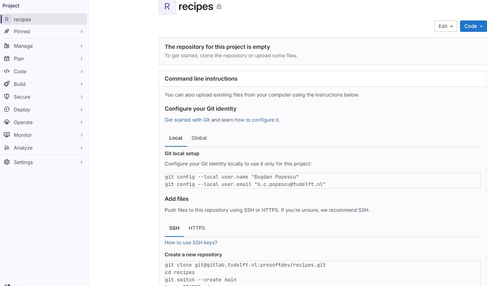
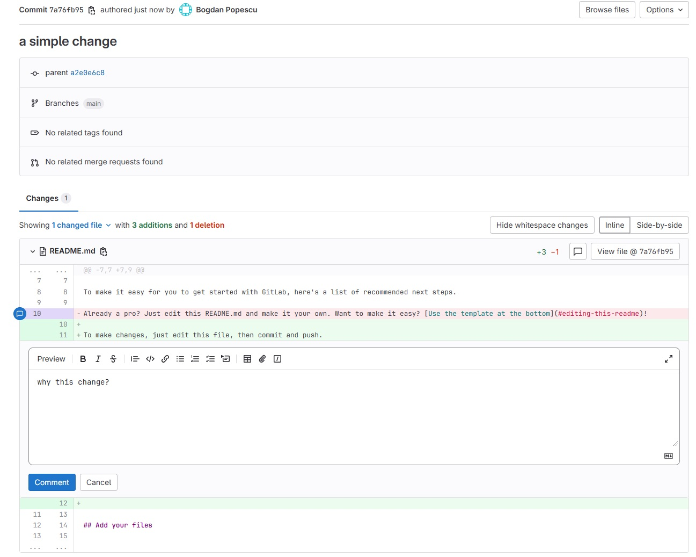

Image 1 of 1: ‘Comic: a PhD student sends "FINAL.doc" to their supervisor, but after several increasingly intense and frustrating rounds of comments and revisions they end up with a file named "FINAL_rev.22.comments49.corrections.10.#@$%WHYDIDCOMETOGRADSCHOOL????.doc"’
Image 1 of 1: ‘A diagram demonstrating how a single document grows as the result of sequential changes’

Figure 3
Image 1 of 1: ‘A diagram with one source document that has been modified in two different ways to produce two different versions of the document’
Figure 4
Image 1 of 1: ‘A diagram that shows the merging of two different document versions into one document that contains all of the changes from both versions’
Figure 5
Image 1 of 1: ‘Accessing Git visual tools in PyCharm’
Image 1 of 1: ‘Adding a file to a Git repo using PyCharm’

Figure 2
Image 1 of 1: ‘A diagram showing how "git add" registers changes in the staging area, while "git commit" moves changes from the staging area to the repository’

Figure 3
Image 1 of 1: ‘A diagram showing two documents being separately staged using git add, before being combined into one commit using git commit’

Figure 4
Image 1 of 1: ‘Git diff using PyCharm’
Visually diff-ing in PyCharm:
Figure 5
Image 1 of 1: ‘Exploring Git repo history using PyCharm’
Figure 6
Image 1 of 1: ‘A diagram showing how git restore can be used to restore the previous version of two files’
Figure 7
Image 1 of 1: ‘A diagram showing the entire git workflow: local changes are staged using git add, applied to the local repository using git commit, and can be restored from the repository using git checkout’
Image 1 of 1: ‘Explore projects page with tab “Most starred” open. The tab shows a list of projects with icon, name, descriptions, and four statistical values for each entry.’
Project overview page
Figure 4
Image 1 of 1: ‘Create blank project form’

Create blank project form
Figure 5
Image 1 of 1: ‘Project homepage for a new project’

Fresh project homepage
Figure 6
Image 1 of 1: ‘Local repository with staging area’
Image 1 of 1: ‘Adding a new member to your GitLab project’
Figure 2
Image 1 of 1: ‘A diagram showing that "git clone" can create a copy of a remote GitLab repository, allowing a second person to create their own local repository that they can make changes to.’
Figure 3
Image 1 of 1: ‘Reviewing commit changes in GitLab’
Figure 4
Image 1 of 1: ‘Commenting on commit changes in GitLab’

Figure 5
Image 1 of 1: ‘A diagram showing a conflict that might occur when two sets of independent changes are merged’
Figure 6
Image 1 of 1: ‘Git feature branch workflow diagram’
Figure 7
Image 1 of 1: ‘Software project's main branch’
Figure 8
Image 1 of 1: ‘Software project's develop branch’
Figure 9
Image 1 of 1: ‘Merge Request button after pushing to a branch’
Installing and managing Python distributions, external libraries and
virtual environments is, well, complex. There is an abundance of tools
for each task, each with its advantages and disadvantages, and there are
different ways to achieve the same effect (and even different ways to
install the same tool!). Note that each Python distribution comes with
its own version of pip - and if you have several Python
versions installed you have to be extra careful to use the correct
pip to manage external packages for that Python
version.
venv and pip are considered the de
facto standards for virtual environment and package management for
Python 3. However, the advantages of using Anaconda and
conda are that you get (most of the) packages needed for
scientific code development included with the distribution. If you are
only collaborating with others who are also using Anaconda, you may find
that conda satisfies all your needs. It is good, however,
to be aware of all these tools, and use them accordingly. As you become
more familiar with them you will realise that equivalent tools work in a
similar way even though the command syntax may be different (and that
there are equivalent tools for other programming languages too to which
your knowledge can be ported).
Python Environment Hell From
XKCD (Creative
Commons Attribution-NonCommercial 2.5 License)
In the next sections we will look at how to manage virtual
environments from the command line using venv and manage
packages using pip.
Making Sure You Can Invoke Python
You can test your Python installation from the command line with:
BASH
$ python3 --version# on Mac/Linux$ python --version# on Windows — Windows installation comes with a python.exe file rather than a python3.exe file
If you are using Windows and invoking python command
causes your Git Bash terminal to hang with no error message or output,
you may need to create an alias for the python executable
python.exe, as explained in the troubleshooting
section.